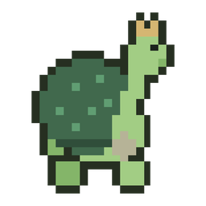
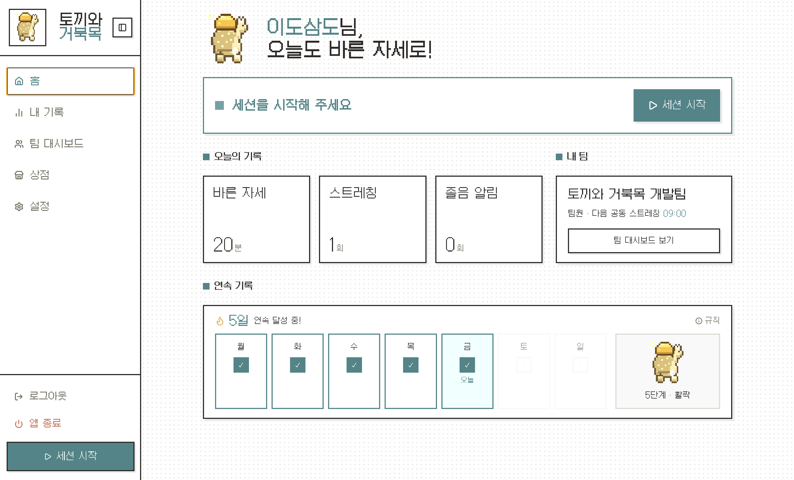
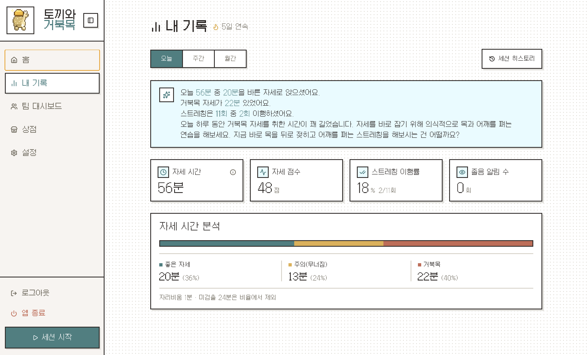
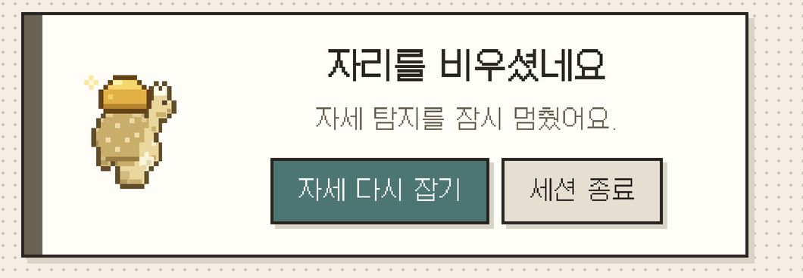
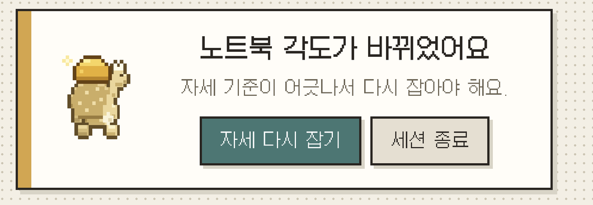
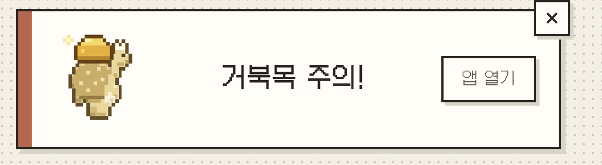
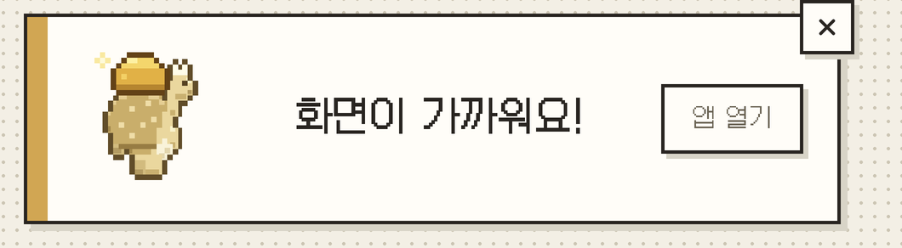
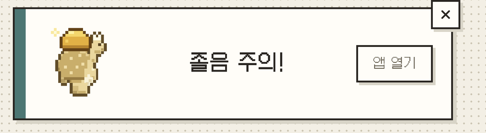
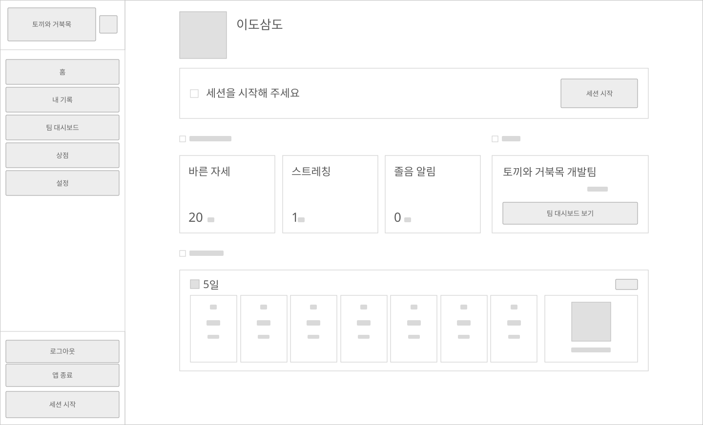
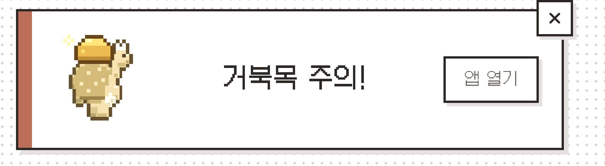

SSAFY 우수 프로젝트 — 토끼와 거북목
지표 정의
사용자 테스트에서 같은 사용자의 연속 기록이 화면마다 다르게 표시된다는 피드백을 받았습니다. 화면의 계산 기준과 서버의 집계 기준이 달랐던 것이 원인이었고, 지표 정의를 팀에서 합의해 맞췄습니다.
홈의 연속 기록과 내 기록 화면의 연속 기록이 서로 다른 숫자를 보여줬습니다. 어느 쪽이 맞는지 판단할 정의가 문서에 없었습니다.
화면 계산과 서버 집계가 갈리는 지점을 네 갈래로 나눠 추적했습니다. '바른 자세 시간'을 어떤 값(workSeconds vs effectiveMonitoringSeconds)으로 셀지가 화면과 서버에서 달랐다는 것을 확인했습니다.
팀원들과 연속 기록의 정의와 계산 기준을 하나로 합의하고 문서로 남겼습니다. 이후 새로 만드는 화면도 같은 정의를 따르게 했습니다.
프론트엔드 화면 계산은 직접 수정했고, 서버 집계는 합의한 정의를 백엔드 담당자에게 전달해 수정 결과를 함께 확인했습니다. 이후 모든 화면이 같은 숫자를 보여줍니다.

홈 — 연속 기록

내 기록 — 같은 정의로 집계된 연속 기록
기술 스택
주요 기능
거북목(구부정한 자세)·화면 근접·졸음 3가지 상태를 웹캠으로 실시간 감지하고 화면 알림으로 알려줍니다. 시스템 트레이에 상주해 창을 닫아도 백그라운드에서 감지가 이어지며, 모든 영상 분석은 사용자 PC 안에서만 이루어지고 영상은 서버로 전송되지 않습니다.
설정한 작업 시간이 끝나면 스트레칭을 제안하고, 동작별 상세 가이드에 따라 올바르게 수행했는지 카메라로 판정합니다.
혼자서도, 팀 단위로도 사용할 수 있습니다. 팀 모드에서는 서로의 작업 상태를 공유하고, 팀에서 정한 시각에 팀원들과 같이 스트레칭합니다.
세션 참여와 좋은 자세 유지로 골드를 받아 캐릭터를 꾸밉니다. 키운 캐릭터는 트레이 아이콘에도 표시됩니다.
개인 단위로도, 팀 단위로도 바른 자세 시간, 시간대별 그래프, 연속 기록을 확인할 수 있습니다.
알림 구조
우선순위 1 · 무효화 알림
닫기 버튼이 없습니다. 자세를 다시 잡거나 세션을 끝내야 감지가 이어집니다. 둘이 함께 뜨면 자리비움을 먼저 보여 줍니다.

자리비움

노트북 각도 변경
↓ 두 종류가 함께 발생하면 무효화 알림이 먼저
우선순위 2 · 감지 알림
자세가 돌아오면 저절로 사라지고, 설정에서 종류별로 끌 수 있습니다. 세 알림 사이에는 우선순위가 없고 최대 3개까지 함께 표시됩니다.

거북목

화면 근접

졸음
실제 앱의 알림 화면입니다.
핵심 기술
MediaPipe(Face/Pose Landmarker)를 서버가 아닌 사용자 PC의 렌더러에서 직접 실행합니다. 웹캠 영상은 PC 밖으로 나가지 않고, 서버에는 집계 결과만 전송됩니다.
목-어깨 비율의 절대값은 사람·카메라 위치마다 달라 고정 임계값으로는 판정할 수 없습니다. 시작 시 사용자의 "바른 자세"를 측정해 개인 baseline을 만들고 기준 대비 하락률(%)로 판정하며, 어깨가 화면 밖으로 나가는 상황 감지 같은 환경 점검까지 포함해 오판정을 줄였습니다. 임계값 근처에서 판정이 깜빡이지 않도록 히스테리시스·지속시간 확정 로직도 둡니다.
관절 각도 기반으로 진행률·축 이탈·측정 불가를 분리해 채점하고, 조건별 진행률 중 최솟값을 써서 모든 조건을 만족해야 동작이 인정되게 했습니다. 판정 로직은 웹캠 없이 실행되는 순수 함수와 상태 머신으로 만들어 유닛 테스트 22종으로 확인했습니다.
WebSocket으로 팀원 간 작업 상태 공유와 동시 스트레칭 세션을 구현했습니다. STOMP를 쓰지 않고 필요한 메시지만 담은 JSON 형식을 직접 정했습니다.
시스템 아키텍처
AI 문서 혼선
팀원 각자가 생성형 AI로 산출물을 만들자, 같은 기능을 서로 다르게 이해하는 일이 생겼습니다. 같은 질문에도 시점·사람·모델에 따라 AI의 답이 달라졌고, 문서끼리 서로 충돌했습니다. 그래서 팀장으로서 기준 문서부터 정했습니다.
기준 정리
화면 요소 단위로 팀 워크숍을 진행해 모두가 같은 그림을 보고 논의하게 했습니다.
검수를 통과한 문서만 기준 문서로 확정했습니다. AI 산출물은 초안으로만 다뤘습니다.

와이어프레임 — 홈 화면 (피그마, 직접 제작)
구현 — 같은 화면의 배포 버전
AI 모듈 지연
감지 엔진(MediaPipe)의 완성이 늦어지면 알림·세션 등 프론트 전체가 대기해야 하는 일정 위험이 있었습니다. 그래서 결과 타입부터 합의하고, 나머지를 동시에 개발했습니다.
MediaPipe 감지 엔진이 완성되기 전에, 그 출력 타입부터 팀 계약으로 고정했습니다.
계약된 타입을 대신 생성하는 시뮬레이터로 알림과 세션 로직을 먼저 개발했습니다.
세션 18건·알림 22건의 테스트로 계약이 지켜지는지 확인했습니다.
실제 감지 엔진이 들어왔을 때 알림 코드는 수정 없이 그대로 동작했습니다.

계약대로 동작한 알림 — 감지 엔진 교체 전후 동일 코드
배포 후 피드백 반영
사용자 테스트에서 27건의 피드백을 받았습니다. 연속 기록 불일치는 위에서 다뤘고, 시스템의 기준 자체를 바꾼 또 하나의 사례는 LLM 리포트였습니다.
리포트 문장 안에서 LLM이 수치를 지어내는 환각이 발생했습니다.
수치는 서버가 확정하고 LLM은 판단 문장만 쓰도록 역할을 나눴습니다. 숫자가 섞인 응답은 정규식 검증으로 폐기하는 규칙까지 더해 화면 통계와 리포트의 숫자를 맞췄습니다.
결과/성과
가입 사용자
80여 명
사용자 피드백
27건 반영
테스트
40건 세션 18 + 알림 22
develop 머지 (팀 1위)
77건 · 커밋 153건
배운 점과 개선 방향
팀장으로서 개발 기준을 먼저 정했습니다. 화면과 서버의 숫자가 달랐을 때도 코드를 고치기 전에 지표 정의부터 합의했습니다. 기준 문서와 타입 계약을 정해 두니 다섯 명이 나눠 작업해도 결과를 하나로 합칠 수 있었습니다.
아쉬운 점과 개선 방향